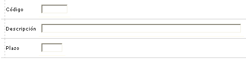
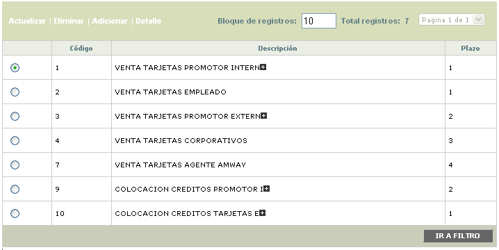
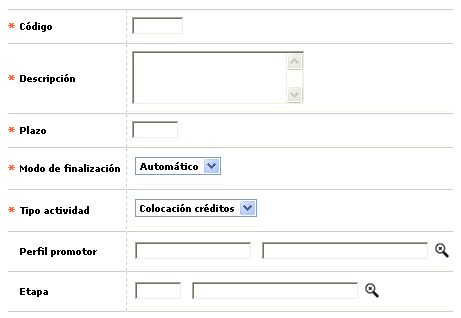
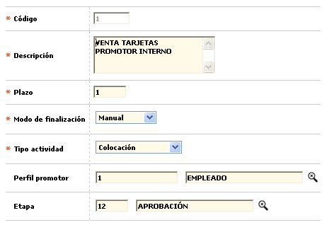
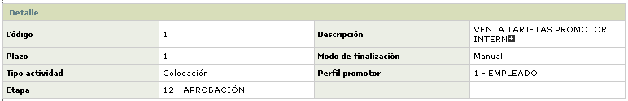

Actividades |
Mediante esta función la entidad determina las tareas que deben realizar los funcionarios promotores durante la permanencia de la solicitud en una etapa específica.
Filtro: El formulario cuenta con un filtro inicial de búsqueda, necesario para la consulta de la información:

Código |
Campo alfanumérico de 4 posiciones que permite filtrar por la tarea a realizar en una etapa definida. |
Descripción |
En este campo alfanumérico de hasta 30 posiciones en el cual se puede ingresar un palabra clave para realizar la búsqueda. |
Plazo |
Campo numérico de 3 dígitos que permite buscar por el plazo de la actividad. |
El formulario contiene las opciones Actualizar, Eliminar, Adicionar y Detalle.

Adicionar: Si el usuario invoca la opción Adicionar se despliega un formulario con los siguientes campos:

Código |
Campo alfanumérico de 4 posiciones obligatorio, donde se registra el valor de identificación que se asigna a la tarea a realizar en una etapa definida, por determinado perfil de funcionario promotor. |
Descripción |
En este campo alfanumérico de hasta 30 posiciones, obligatorio, se registra el nombre o descripción que ayuda a identificar cada una de las taréas asociada al código anterior. |
Plazo |
Campo numérico de 3 dígitos, obligatorio, en el que se registra el tiempo expresado en días, estimado por la entidad para la culminación de cada taréa. |
Modo de finalización |
Este campo contiene lista de valores de la que se selecciona el mecanismo por el cual se actualiza el estado de la tarea para interpretarla como culminada. Cuando se selecciona manual, significa que cada promotor ingresa a sus diferenes tareas asignadas y las finaliza, siendo esta la base para la liquidación de sus comisiones; si la selección es automática significa que la tarea será actualizada por el sistema. |
Tipo actividad |
Campo que posee lista de valores adjunta de la cual puede seleccionarse entre Coloc. créditos (Crediagil), Colocación (Tarjetas) o Normal lo que permite diferenciar la clase de obligaciones a las que se refiere la actividad. |
Perfil promotor |
Las tareas que se definan se asocian a un perfil de promotor en particular, con lo que se determina el grado de responsabilidad y confianza depositada en los funcionarios que pertenecen a cada perfil; este campo contiene una lista de valores con los perfiles que maneja la entidad para sus funcionarios promotores, de donde se escoge el que más se ajuste al grado de responsabilidad y compromiso exigido para cada tarea. |
Etapa |
Se han determinado las etapas en las cuales puede existir un realización previa de tareas en cada una de ellas; las etapas predefinidas son el ingreso de la solicitud, Verificación de referencias, Generación de plástico y Generación de sobreflex. |
Actualizar: Si el usuario invoca la opción Actualizar se despliega un nuevo formulario en cual los únicos campos modificables son los siguientes:

Detalle: Si el usuario invoca
la opción Detalle se despliega el siguiente formulario.
